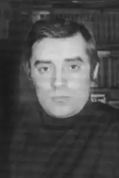
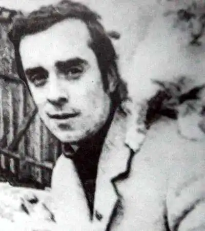
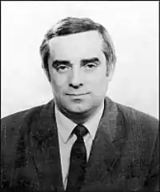

Народився в селі Старозінів (Білопільський район, Сумська область). Закінчив Тернівську загальноосвітню школу, філологічний факультет Київського національного університету імені Тараса Шевченка. Після університету працював директором школи в селі Височне Ратнівського району на Волині.
У фантастиці дебютував оповіданням "Щось негаразд…" (1980).
На початку 1980-их років молодий письменник опублікував роман "Попіл на рани" та книжку повістей "Маленькі подорожі". Водночас Положій закінчив аспірантуру академічного Інституту літератури й захистив кандидатську дисертацію. За першими книжками пішли наступні: "Господарі землі", "Човен у тумані", "Сонячний вітер", окремою монографією вийшла кандидатська дисертація, присвячена творчості Юрія Бондарєва. Став лауреатом престижної тоді премії імені Павла Усенка, був лауреатом премії ім. О. Горького. Укладач збірок "Пригоди, подорожі, фантастика-80" і "ППФ-84". Був рецензентом збірника "ППФ-86". Особливого резонансу в літературній періодиці набула Вікторова повість "Жив-був Іван". Роман "Попіл на рани", повісті "Відпустка з відвідинами близьких", "Розшарування", "М'яч", "Жив-був Іван" вирізнялися суворою чоловічою інтонацією. Його твори видавалися в Москві, де здобули кілька солідних відзнак, були перекладені англійською, іспанською, болгарською, словацькою мовами. Положій працював в Інституті літератури, завідував відділом прози в журналі "Київ", із 1985 року був головним редактором кіностудії імені Олександра Довженка, згодом редактором об'єднання "Земля" на тій же кіностудії. Був членом Спілки письменників СРСР. 21 травня 2004 року Віктор Положій помер. Похований письменник поряд із батьком Положієм Іваном Миколайовичем на сільському цвинтарі в селі Ясногородка Макарівського району на Київщині. Окрім не знаного нами роману, блискучих новел, він залишив кіносценарії "Вітер у дверях", "Старики в бій не йдуть", і п'єсу "Совки розлучаються".